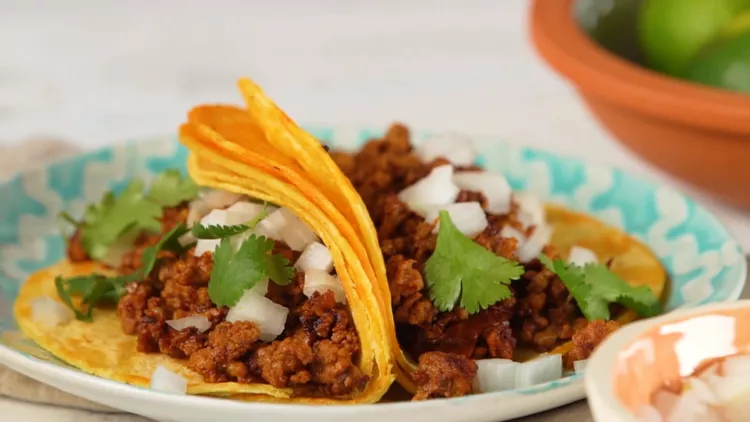

Chorizo Tacos

Ingredients:
- One package of beef chorizo
- Two tablespoons chipotle peppers in adobo sauce
- Four corn tortillas
- Two tablespoons chopped onion
- Optional: Two tablespoons chopped cilantro to taste
Steps:
- Combine chorizo and chipotle peppers in a bowl.
- Heat skillet to Medium-High heat.
- Add chorizo mixture cook for 5-7 minutes.
- Heat tortillas for 1-2 minutes in reserved grease skillet.
- Fill tortillas with chorizo mixture.
- Add onion and cilantro as desired.
All Recipes